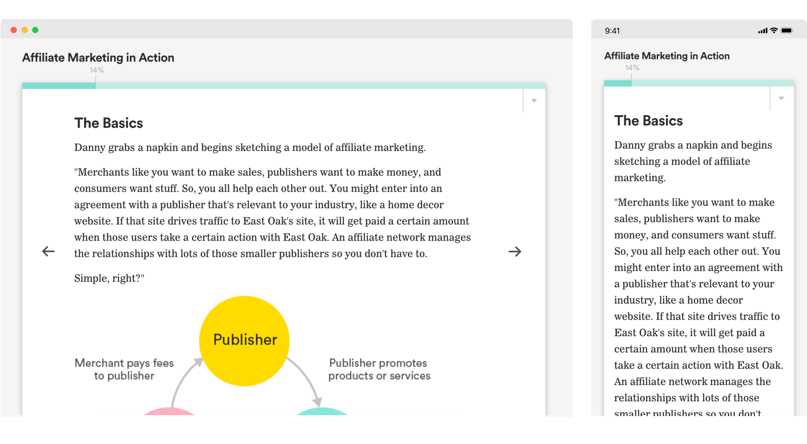

Process
It was critical to work closely with instructional designers. However, collaboration across a range of clients, topics, and campuses was an exciting challenge. I used asynchronous ideation surveys containing sketches and questions to allow me to aggregate feedback and move designs forward with clear qualitative and quantitative feedback.

Lesson Components
I designed and prototyped interactive lesson components for instruction across different learning environments: synchronous, asynchronous, online, & blended.
Lo-fi Sketches & Animations
Communicating ideas around student progress and engagement was really difficult to do staying static. This project forced me to produce lots of low-fidelity animations to help share, test and validate ideas.
Animation Sketch: Timers, Uploads, and Webcams.

Animation Sketch: Visual Continuity in Slideshows